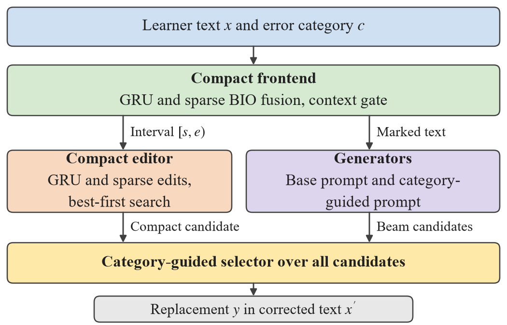

Japanese NLP · Letter · 2026
Fix the interval.
Then choose the replacement.
Category-Guided Candidate Selection for Japanese Grammatical Error Correction
Yan Li (Bengbu University) and Xubo Fang (Kanazawa University)
01 / Abstract
Selection at a fixed interval.
Category-conditioned Japanese grammatical error correction returns one erroneous interval and its replacement for a requested error category. However, a compact localizer trained on scarce learner annotations fixes the interval far more often than it supplies the reference replacement, whereas prompted large language models often miss the interval. Therefore, we propose category-guided candidate selection for a structured correction system in which a compact recurrent frontend fixes one interval. A compact editor and two low-rank-adapted 4-billion-parameter generators, one prompted with category guidance and retrieved demonstrations, propose replacements for that interval. A conditional logit selector scores the pooled candidates with generator likelihoods, fluency differences under two base language models, and indicators of whether a candidate changes the grammar that the category names. On a test set of 559 learner-writing examples, selection raised exact span-and-replacement agreement from 30.71% with the top-beam rule to 41.74%, on par with the 40.61% of the strongest hosted large language model pipeline, whose interval agreement it exceeded by 18.66 points. Locally run 4-billion-parameter generators thus reach the exact agreement of hosted pipelines.
02 / Method
One interval, pooled candidates, one choice.
Compact frontend
A bidirectional GRU and sparse localizers fix one interval of the requested category; a context gate adapts the fusion to shortened inputs.
Candidates
A compact editor and two LoRA-adapted Qwen3-4B generators propose replacements for that interval. One generator receives the base prompt; the other receives a category guidance sentence and four retrieved development corrections of the same category.
Selector
A conditional logit selector chooses among the pooled candidates with generator likelihoods, fluency differences under two base language models, category-consistency indicators, and a register feature.


03 / Results
Exact agreement of a hosted pipeline, run locally.
On the 559 CAMC-JL test examples, category-guided selection raised ExactMatch from 30.71% with the top-beam rule of the base generator to 41.74%, on par with 40.61% for evidence-gated LGR-MAS with Qwen3.7 Max, the strongest of fifteen released hosted runs.
SLA-JEC matched the reference interval in 76.45% of the cases and the hosted pipeline in 57.78%. The ablation attributes the largest effects to the learned weights and to the guided generator, whose retrieved demonstrations carry more of the gain than a second generator.
Paired differences from the hosted pipeline, with six-metric simultaneous 95% intervals from 20,000 source-unit cluster resamples: ExactMatch +1.13 points [−4.80, 7.07]; SpanMatch +18.66 points [11.69, 25.75].
| System | SpanMatch | ExactMatch |
|---|---|---|
| Category-guided selection | 76.45% | 41.74% |
| Two generators, mean likelihood | 76.45% | 35.78% |
| Auxiliary 4B, top-beam rule (BF16) | 76.45% | 33.04% |
| Base generator, top-beam rule (4-bit) | 76.45% | 30.71% |
| Evidence-gated LGR-MAS, Qwen3.7 Max | 57.78% | 40.61% |
| Fine-tuned Japanese T5 | 62.55% | 17.83% |
| LGR-MAS, local Qwen3-4B | 21.11% | 10.91% |
All six metrics, intervals, ablations, and control generators are in the repository folder results.
04 / Reproduce
Code, adapters and a frozen selector.
The repository contains the code for generator training, candidate scoring, selection, ablation, controls, and external baselines, the compact frontend, the frozen selector configuration and weights, the CAMC-JL metadata, and the numerical results. Release v1.0.0 holds the adapter tensors and the frontend files with SHA-256 checksums in WEIGHTS.json.
Select and report
python scripts/download_weights.py
cd code
python apply_rerank_test.py ../results/selector_final.json ../results/final_selector
python ablation.py ../results/selector_final.json ../results/ablation.json
python report_test.py ../results/final_selector_matrix.npyThe README lists the full order of runs, from the learner stage of both generators to cross-scoring and fluency scoring.
Data
Learner texts, reference corrections, and generated candidates are not redistributed. The CAMC-JL metadata and the per-example results align through the public release IDs; the texts can be rebuilt from the Natane and ICJS/TUFS corpora as described in the README.
Cite this work
Y. Li and X. Fang, “Category-Guided Candidate Selection for Japanese Grammatical Error Correction,” manuscript, 2026. Code, weights and results: https://github.com/YanLiBengbu/category-guided-selection, release v1.0.0.